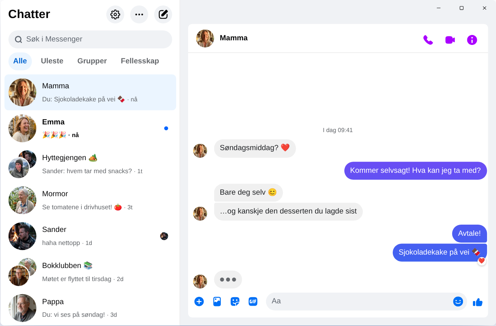

Chatpane / Windows
Oppdatert november 2026
Slik får du Messenger på PC i 2026
Meta la ned Messenger-appen for Windows 15. desember 2025, og messenger.com sender deg nå videre til Facebook. Dette fungerer i dag på en PC eller laptop med Windows 10 eller 11.
Gratis og åpen kildekode · Windows 10 og 11 · Ikke en app fra Meta
Kort svar
Det finnes ikke lenger noen offisiell Messenger-app for PC. Meta har fjernet den fra Microsoft Store, og siden april 2026 fungerer Messenger på datamaskinen bare på facebook.com/messages, inne på Facebook.
Vil du ha Messenger i et eget vindu, uten feed og Reels? Chatpane er en gratis app med åpen kildekode for Windows som viser chattene dine og ingenting annet. Det er et uavhengig prosjekt og ikke en app fra Meta.
Derfor virker ikke de gamle oppskriftene
Mange guider ber deg fortsatt søke opp Messenger i Microsoft Store, og nedlastingssider tilbyr fremdeles installasjonsprogrammet «Messenger 2250.1». Det er nettopp appen Meta la ned i desember 2025: Når du åpner den, sender den deg bare videre til Facebook. Du får ingenting ut av å installere den.
Skriv heller aldri inn Facebook-passordet ditt i et program eller på en side du ikke vet hvor kommer fra. Tilbyr noen deg «Messenger for PC» med en egen innloggingsside, bør du være på vakt.
Hva skjedde med Messenger for Windows?
I 2024 byttet Meta ut Windows-appen med en innpakket nettversjon. I oktober 2025 varslet Meta nedleggelsen og fjernet appen fra Microsoft Store, og 15. desember 2025 sluttet den å virke. I april 2026 ble også messenger.com stengt. Datoer og detaljer finner du under hva som skjedde med Messenger på PC.
Alternativene dine
Slik kan du bruke Messenger på Windows
Chatpane på Windows
Chatpane åpner den samme Messenger som du ser i nettleseren. Chatter, grupper, samtaler og bilder er der, og alt holder seg synkronisert med mobilen. Det eneste som forsvinner, er resten av Facebook.
- Bare Messenger. Facebooks feed, Reels, Marketplace og søk er skjult.
- Varsler du kan bruke. Svar, reager, merk som lest eller demp rett fra varselet, uten å åpne vinduet. Praktisk når foreldregruppa, laget eller hyttegjengen skriver hele dagen.
- Oppgavelinjen og systemstatusfeltet. Antall uleste meldinger på ikonet, start ved systemoppstart, og om du vil, fortsetter Chatpane å kjøre i systemstatusfeltet når du lukker vinduet.
- Personvern. Skjul at du skriver, skjul navn og profilbilder når du deler skjermen, og blokker Facebooks analyseforespørsler (på som standard).
- Åpen kildekode. Chatpane er åpen kildekode under MIT-lisensen. Koden ligger på GitHub, så alle kan sjekke hva appen gjør.
- På norsk. Chatpane følger språket på datamaskinen din, så menyer og innstillinger vises på norsk.

Slik installerer du Chatpane
- Last ned installasjonsprogrammet for Windows. Har PC-en en ARM-prosessor, bruker du ARM64-versjonen.
- Åpne filen. Installasjonsprogrammene for Windows er ikke digitalt signert ennå, så SmartScreen kan vise «Windows beskyttet PC-en». Klikk på «Mer info» og deretter på «Kjør likevel». Last bare ned Chatpane fra chatpane.app eller GitHub.
- Logg inn med den vanlige Facebook-kontoen din. Chattene dine dukker opp med en gang.
Vil du ikke installere noe? Den portable versjonen (.zip) kjører uten installasjon og krever ikke administratorrettigheter.
Vanlige spørsmål
Spørsmål om Messenger på PC
Er Chatpane gratis?
Ja. Ingen pris, ikke noe abonnement og ingen reklame. Chatpane er åpen kildekode under MIT-lisensen, og koden ligger åpent på GitHub, så hvem som helst kan sjekke den.
Er dette den offisielle Messenger-appen?
Nei. Chatpane er et uavhengig prosjekt uten tilknytning til Meta. Den viser ekte Messenger fra facebook.com/messages i et eget vindu, så meldingene dine går fortsatt gjennom Messenger, og Metas vilkår gjelder.
Fungerer det uten Facebook-konto?
Nei. Siden april 2026 lar Meta deg bare bruke Messenger uten Facebook-konto i mobilappen. På datamaskinen trenger både Chatpane og alle andre løsninger en konto som kan logge inn på facebook.com.
Fungerer Chatpane på Windows 10?
Ja, på Windows 10 og 11. Chatpane bruker Microsoft Edge WebView2, som følger med Windows 11. På Windows 10 laster installasjonsprogrammet det ned hvis det mangler.
Kan jeg ringe og ha videosamtaler?
Ja. Det er hele Messenger, så tale- og videosamtaler åpnes i sitt eget vindu, akkurat som på facebook.com.
Hent Chatpane
Gratis og åpen kildekode. Lastes ned på sekunder - den er bare rundt 4 MB.
Hele listen med sjekksummer ligger på
GitHub
- eller brew install --cask kristofferR/tap/chatpane